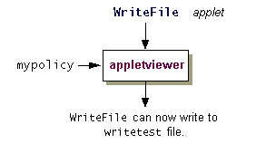

Now that you have created themypolicypolicy file, you can execute theWriteFileapplet to create and to write the filewritetest, as shown in the following figure.
Whenever you run an applet, or an application with a security manager, the policy files that are loaded and used by default are the ones specified in the "security properties file", which is located in one of the following directories:
Windows: java.home\lib\security\java.security UNIX: java.home/lib/security/java.securityNote: The java.home environment variable names the directory into which the JRE was installed.The policy file locations are specified as the values of properties whose names take the form
Wherepolicy.url.nnindicates a number. Specify each property value in a line that takes the following form:Where URL is a URL specification. For example, the default policy files, sometimes referred to as the system and user policy files, respectively, are defined in the security properties file aspolicy.url.n=URLpolicy.url.1=file:${java.home}/lib/security/java.policy policy.url.2=file:${user.home}/.java.policyIn the previous step you did not modify one of these existing policy files. You created a new policy file named
Note: Use of the notation${propName}in the security properties file is a way of specifying the value of a property. Thus${java.home}will be replaced at runtime by the actual value of the"java.home"property, which indicates the directory into which the JRE was installed, and${user.home}will be replaced by the value of the"user.home"property, for example,C:\Windows.mypolicy. There are two possible ways you can have themypolicyfile be considered as part of the overall policy, in addition to the policy files specified in the security properties file. You can either specify the additional policy file in a property passed to the runtime system, as described in Approach 1, or add a line in the security properties file specifying the additional policy file, as described in Approach 2.
Note: On a UNIX system, you must have DNS configured in order for theWriteFileprogram to be downloaded from the public web site, shown in the command below. You need to havednsin the list of lookup services for hosts in your/etc/nsswitch.conffile, as inhosts: dns files nisYou also need a/etc/resolv.conffile with a list of nameservers. Consult your system administrator for more information.
You can use theappletviewercommand-line argument,-J-Djava.security.policy, to specify a policy file that should be used, in addition to the ones specified in the security properties file. To run theWriteFileapplet with your newmypolicypolicy file included, type the following in the directory in whichmypolicyis stored:appletviewer -J-Djava.security.policy=mypolicy http://java.sun.com/docs/books/tutorial/security/tour1/examples/WriteFile.html
Notes:
- Type this command as a single line, with a space between
mypolicyand the URL, and no spaces in the URL. Multiple lines are used in this example for legibility purposes.
- If this command line is longer than the maximum number of characters you are allowed to type on a single line, do the following. Create and save a text file containing the full command, and name the file with a
.batextension, for example,wf.bat. Then in your command window, type the name of the.batfile instead of the command.If the applet still reports an error, you must troubleshoot the policy file. Use the Policy Tool to open the
mypolicyfile (using File > Open) and check the policy entries you just created in the previous step, Set Up a Policy File to Grant the Required Permissions.To view or edit an existing policy entry, click on the line displaying that entry in the main Policy Tool window, then choose the Edit Policy Entry button. You can also double-click the line for that entry.
This launches the same type of Policy Entry dialog box that displays when you are adding a new policy entry after choosing the Add Policy Entry button, except in this case the dialog box is filled in with the existing policy entry information. To change the information, retype it (for the CodeBase and SignedBy values) or add, remove, or modify permissions.
You can specify a number of URLs (including ones of the form "http://") inpolicy.url.nproperties in the security properties file, and all the designated policy files will get loaded.So one way to have our
mypolicyfile's policy entry considered by theappletvieweris to add an entry specifying that policy file in the security properties file.
Important: If you are running your own copy of the JDK, you can easily edit your security properties file. If you are running a version shared with other users, you may only be able to modify the system-wide security properties file if you have write access to it or if you ask your system administrator to modify the file when appropriate. However, it's probably not appropriate for you to make modifications to a system-wide policy file for this tutorial test. We suggest that you just read the following to see how it is done or that you install your own private version of the JDK to use for the tutorial lessons.To modify the security properties file, open it in an editor suitable for editing an ASCII text file. Then add the following line after the line starting with
policy.url.2:Windows: policy.url.3=file:/C:/Test/mypolicy UNIX: policy.url.3=file:${user.home}/test/mypolicyOn a UNIX system you can also explicitly specify your home directory:
policy.url.3=file:/home/susanj/test/mypolicyNow you can run the following:
Type this command on one line, without spaces in the URL.appletviewer http://java.sun.com/docs/books/tutorial/ security1.2/tour1/examples/WriteFile.htmlIf you still get a security exception, you must troubleshoot your new policy file. Use the Policy Tool to check the policy entry you just created in the previous step, Set Up a Policy File to Grant the Required Permissions. Change any typos or other errors.
Important: Themypolicypolicy file is also used in the Quick Tour of Controlling Applications lesson. You do not need to include themypolicyfile unless you are running this Tutorial lesson. To exclude this file, open the security properties file and delete the line you just added.